Beach
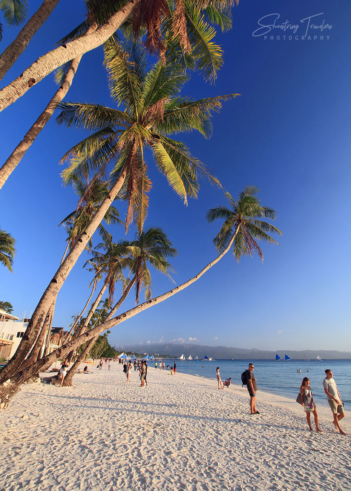
Aklan
Boracay
Four kilometres of powder-white sand, calm turquoise water and the most beautiful sunsets in the country.
Learn More7,641 islands. Powder white beaches, emerald rice terraces, colorful festivals and the warmest smiles in Asia. Let Lakbay Pilipinas guide your next adventure.
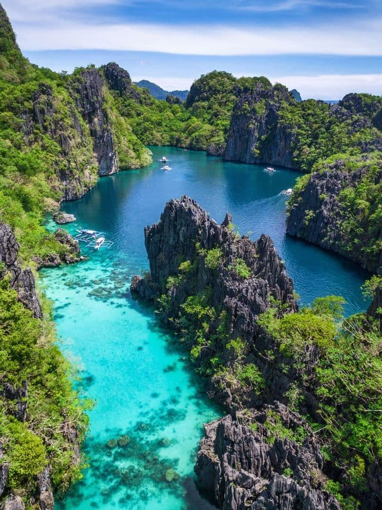
Welcome to Lakbay Pilipinas
The Philippines is an archipelago of more than 7,000 islands, each with its own personality. In the north you will find cool mountain cities and ancient rice terraces carved into the hills over 2,000 years ago. In the south, volcanic islands, sandbars and world-famous dive sites await.
Filipino hospitality is legendary — wherever you go, you will be welcomed with a smile and the word "Mabuhay!" (welcome / long live). This website is your simple guide to the country's best beaches, mountains, food and festivals.
The most loved places in the Philippines — from the world-famous White Beach of Boracay to the surfing waves of Siargao.

Aklan
Four kilometres of powder-white sand, calm turquoise water and the most beautiful sunsets in the country.
Learn More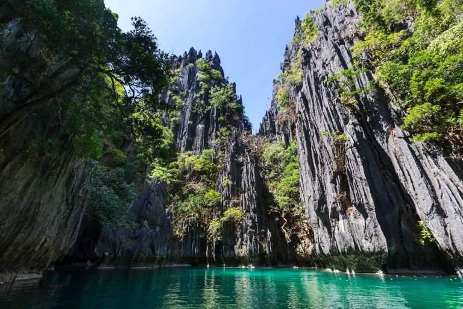
El Nido, Palawan
Dramatic limestone cliffs, hidden lagoons and some of the clearest water on the planet.
Learn More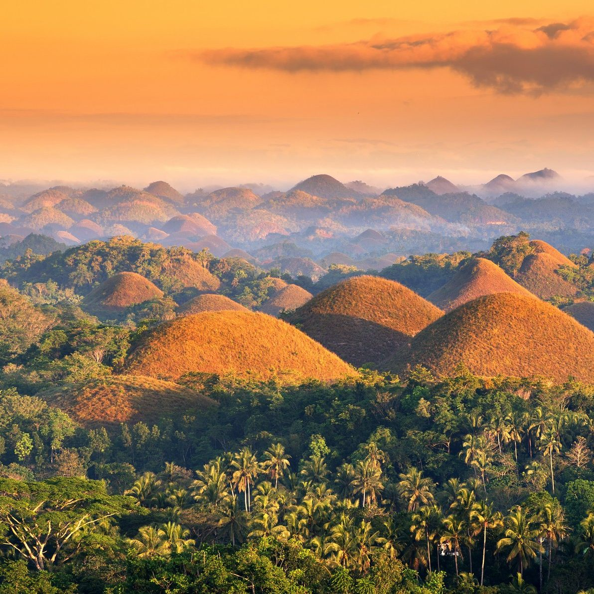
Chocolate Hills
Over 1,200 cone-shaped hills, the tiny tarsier, the Loboc River and the white sands of Panglao.
Learn More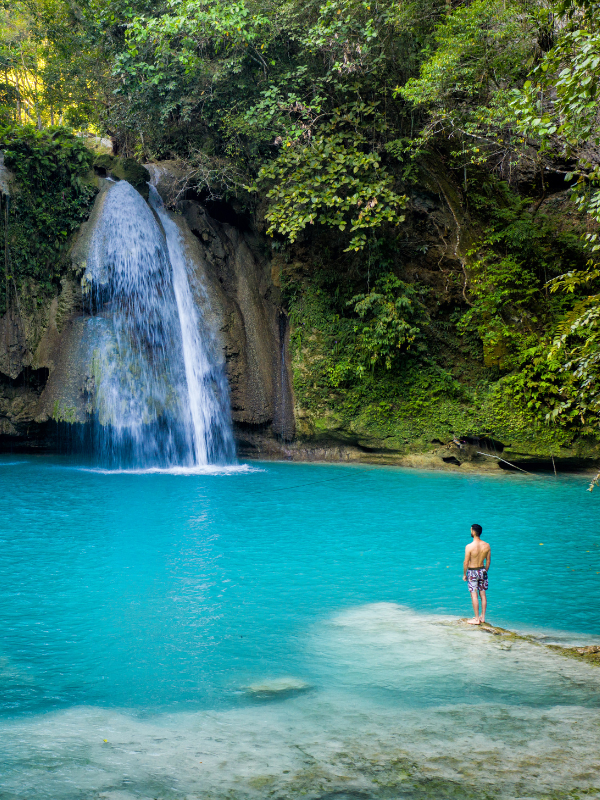
Kawasan Falls
Turquoise waterfalls, Spanish-era history, lechon and beautiful dive spots all on one island.
Learn More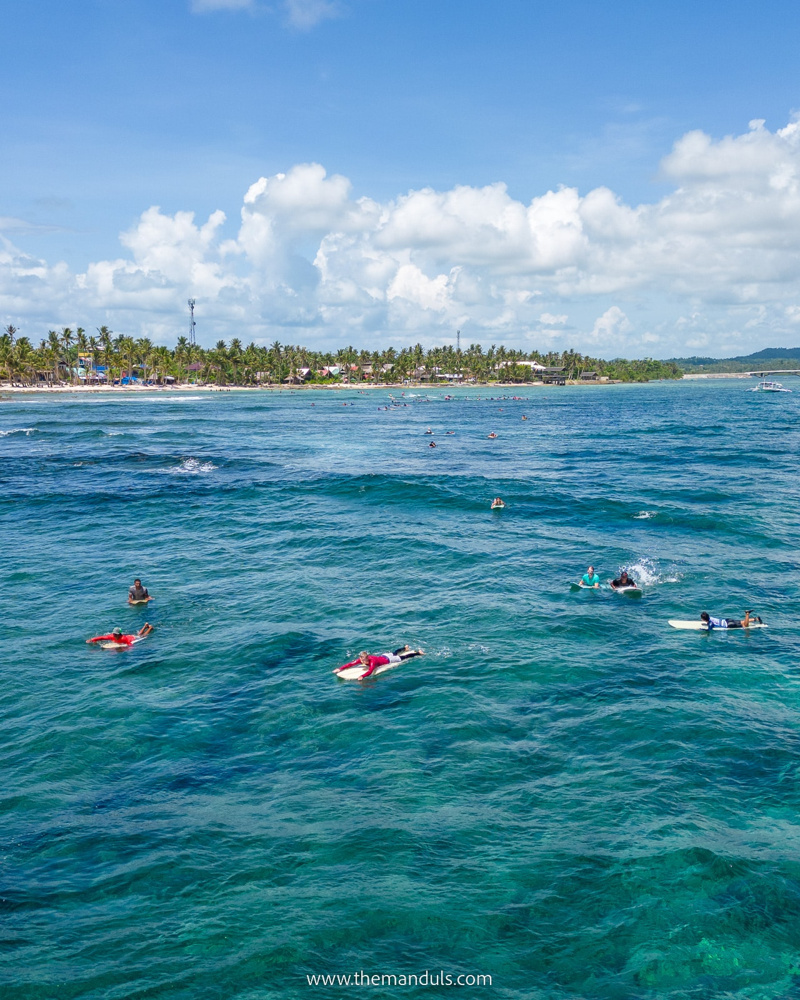
Cloud 9 surf break
The surfing capital of the Philippines, with palm-lined roads, lagoons and island-hopping escapes.
Learn More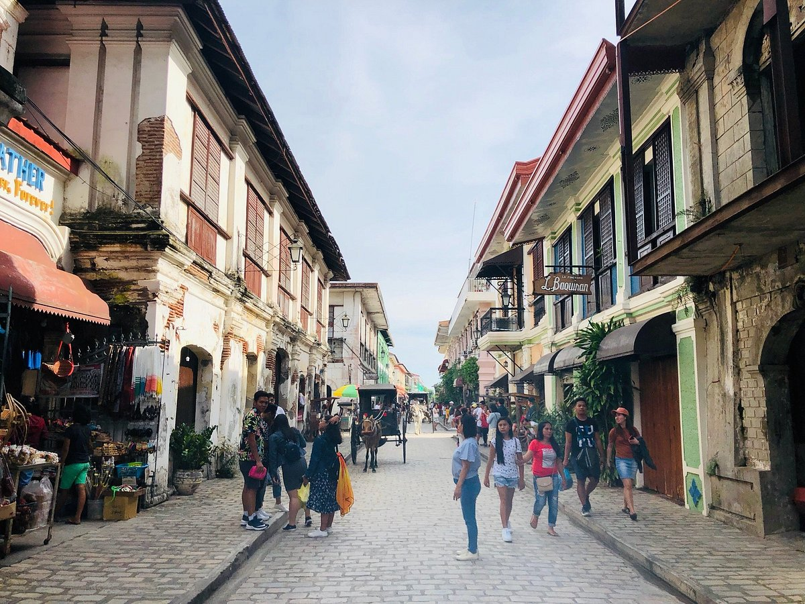
Cobblestone street in Vigan"
A UNESCO World Heritage city with cobblestone streets, horse-drawn carriages and Spanish-era houses.
Learn MoreThere is something for every kind of traveller — whether you love the ocean, the mountains or simply good food.
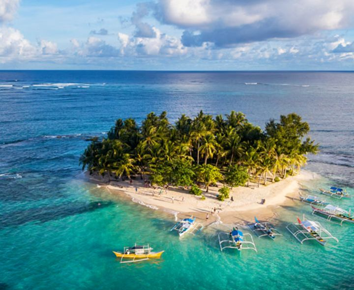
Hop from island to island by boat and discover hidden beaches and sandbars.
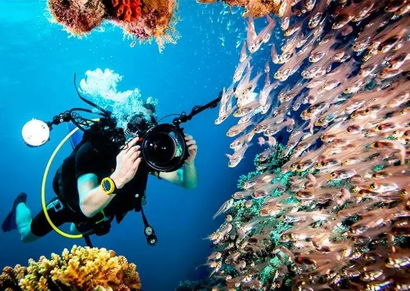
Explore coral gardens, shipwrecks and swim with whale sharks and sea turtles.
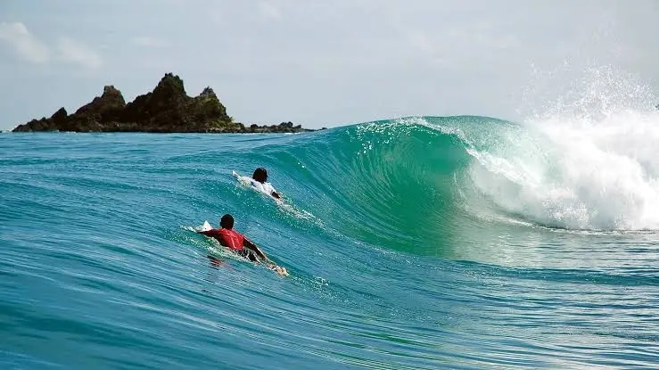
Ride the famous Cloud 9 wave in Siargao or learn the basics in La Union.
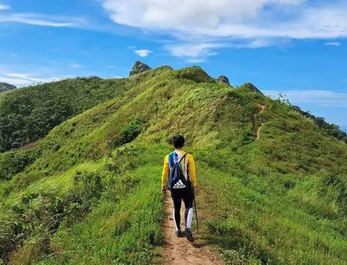
Trek to rice terraces, volcanoes and waterfalls surrounded by tropical forest.
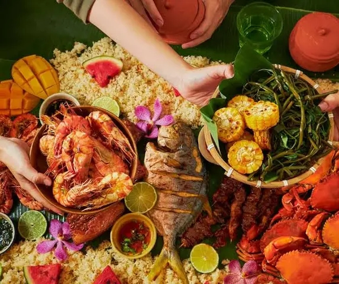
Taste lechon, adobo, sinigang, halo-halo and fresh seafood by the shore.
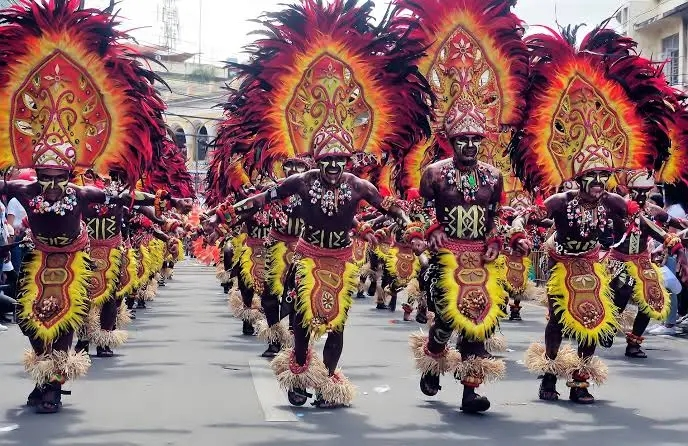
Join colorful street parades like Sinulog, Ati-Atihan and Panagbenga.
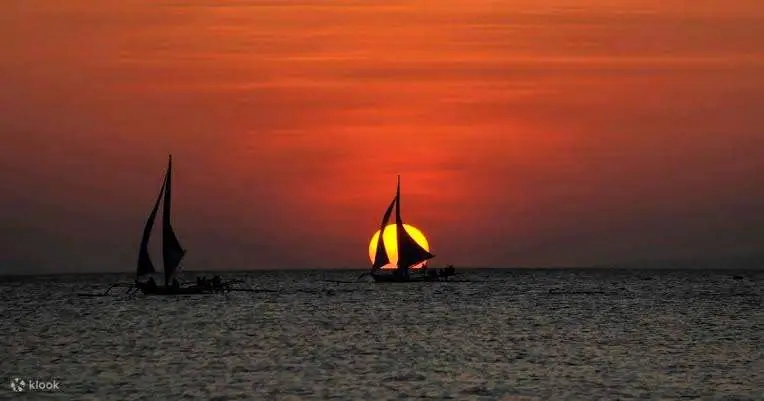
Sail on a traditional paraw sailboat as the sky turns orange and pink.
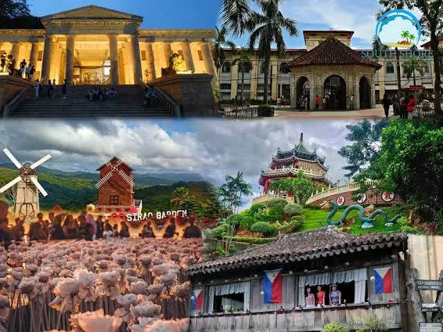
Ride a jeepney or kalesa and explore old churches, markets and museums.
Culture & People
Filipino culture is a beautiful mix of Malay, Chinese, Spanish and American influences. Family is the center of life, and visitors are often treated like part of the family.
Start with our destination guides, then check the travel guide for budgets, transport and safety tips.